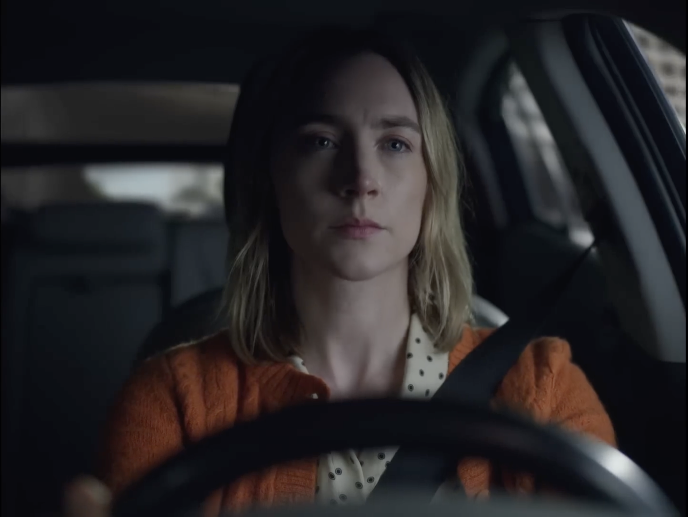
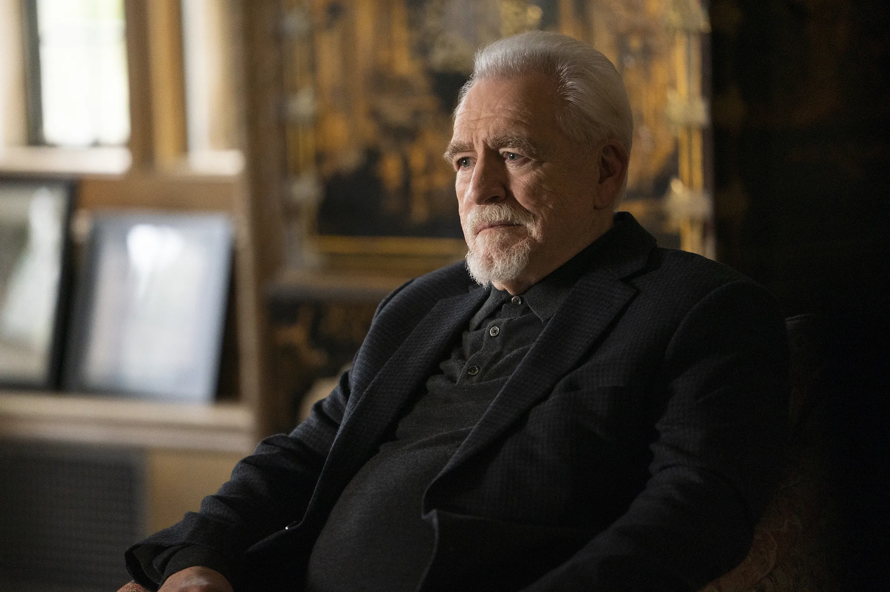
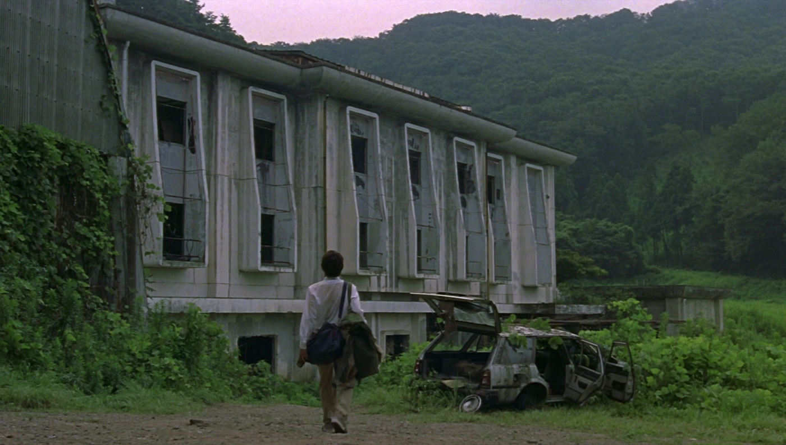

Project
A man inherits his estranged father's mansion — and the maze he built just for him.
Synopsis
After his estranged father's suicide, Jonathan Cameron inherits a destroyed rural mansion. Jon and his wife Esme move in to restore and sell it. But their plan slowly unravels when Jon discovers a hidden hallway that shouldn't exist. As Jon delves deeper into the maze, he is attacked by masked intruders, haunted by visions of his past, and slowly alienated from everyone he trusts. In the film's climax, Jon is forced to navigate the heart of the labyrinth, where he must finally confront the pain he has spent his entire life avoiding.
Directors Statement
There are things inside us we'd rather bury than face. Things we hide from ourselves, from our families, from the world. Those things don't disappear. They rot.
We want to make a movie about living inside a person who is consuming themselves because they're too afraid to look at what's hiding within them. We want it to feel like a nightmare, one constructed the way an architect might design a torture chamber. Claustrophobic, entrapping, filled with danger hiding behind the walls. We should feel almost like Jon's being surveilled. As if somehow, Richard is still watching over him, still pulling the strings.

Characters

Jonathan
Jon has spent his entire life running from his past. He's smart, loyal and secretly insecure. Jon deals with everything alone, inside his own head. But, when he inherits his father's house, Jon finds there's nowhere left to run.
Our ideal actor is deeply charismatic, with a lot of anger underneath. Someone who projects intelligence and restraint while letting resentment leak through in small, dangerous ways. A performance that feels contained, until it isn't.

Esme
Esme has accepted what her life is going to look like. She will keep renting, she won't have the cash to start a family, she's going to spend the rest of her life with Jon. Esme is connected to her emotions, grounded while Jon goes flying into his mind. She believes everything can be fixed. But as she watches Jon deteriorate, her ability to withstand runs out.
Our ideal actress is someone who can portray warmth and maternal care, but also feels like she's carrying a secret. Is that care genuine, or just a ploy to ruin Jon?

Parker
Parker is everything Jon wishes he could be. He fills a room effortlessly. He's charismatic, confident and physically imposing. He has a golden retriever energy that appears simply friendly, but underneath the facade, that energy might be something more calculated.
Our ideal actor for Parker should be an endearing jock who toes the line between charming and threatening. As an audience, we should always be questioning his motive.

Richard
Richard Cameron hangs himself in the first scene of the movie, but his presence lingers long after. Throughout the film we see him in glimpses. He's brilliant, cruel, and the scariest thing in the world to Jon. To everyone else, he was a genius. To Jon, he was a monster.
Our ideal actor is someone who can portray a larger than life figure, one filled with evil, magnetism and strength. Someone whose presence seeps into every frame, even when he's not in it.
The House
The house is an extension of Richard's mind. Monumental, isolated, fully wrecked. We're drawn to constructivism and parasitic architecture. Something that feels epic but also deeply wrong. Throughout the seasons, the house will change. From destroyed, to in repair, to almost ready, and back to destroyed. The house is expressive of Jon's mental state.


The Maze
Unlike the house, the maze is always in pristine condition. Its walls are plaster white, incredibly tall, endlessly long. The lighting is dim, showing just enough to make us feel there's something hiding. The hallways vary in size, narrowing and widening without logic. What's scariest is that we never know what's waiting behind a turn.

.png)


.png)